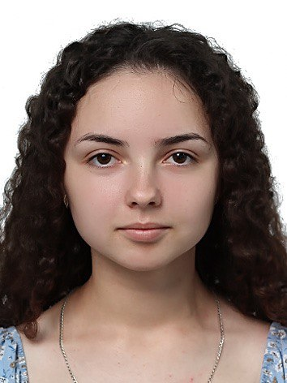

ЗВІТИ З ЛАБОРАТОРНИХ РОБІТ
з дисципліни «Інтернет-технології та проєктування web-застосувань»
Студентки групи ІС-33
Семенюк Катерини Василівни

Лабораторна робота №1
Лабораторна робота №2
Лабораторна робота №3
Лабораторна робота №4
Лабораторна робота №5
Лабораторна робота №6
Лабораторна робота №7
Лабораторна робота №8
Лабораторна робота №9
Тема, метa ЛР №4. Місце розташування сайту, звіту
Адаптивна верстка сайту
Медіа-запити(з використанням логічних операторів)
ВИСНОВКИ
Лабораторна робота №4